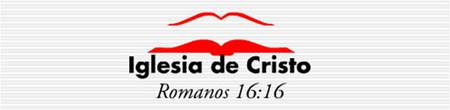

En este espacio estaremos compartiendo la Divina Palabra de Dios entre otras cosas... para ir tras la búsqueda de la verdad.
¿Quienés somos? - Somos la iglesia de Cristo (Romanos 16:16)
La iglesia de Cristo tiene un propósito definido; existe con el fin de llamar a toda criatura al Cristo y al Dios de las Sagradas Escrituras.
Están abiertas sus puertas para todos, especialmente para aquellos que quienes, desde la profundidad serena del corazón, quisieran acercarse a Dios por medio de la adoración reverente y una vida de obediencia.
*La iglesia de Cristo fue fundada por Jesucristo. (Mateo 16:18; Hechos 20:28)
*Fue establecida en Jerusalén. (Hechos capítulo 1:4)
*Fue establecida el día de Pentecostés. (Hechos 2:1)